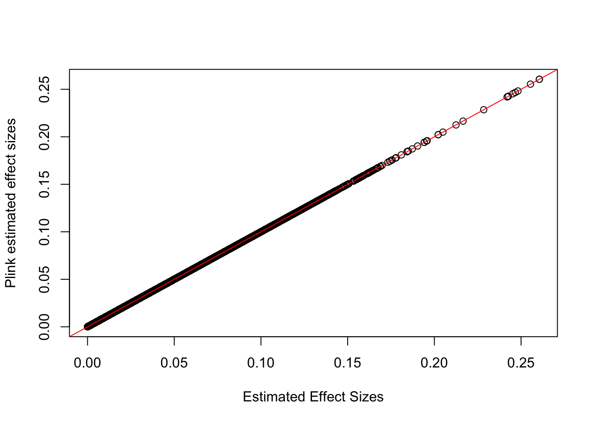
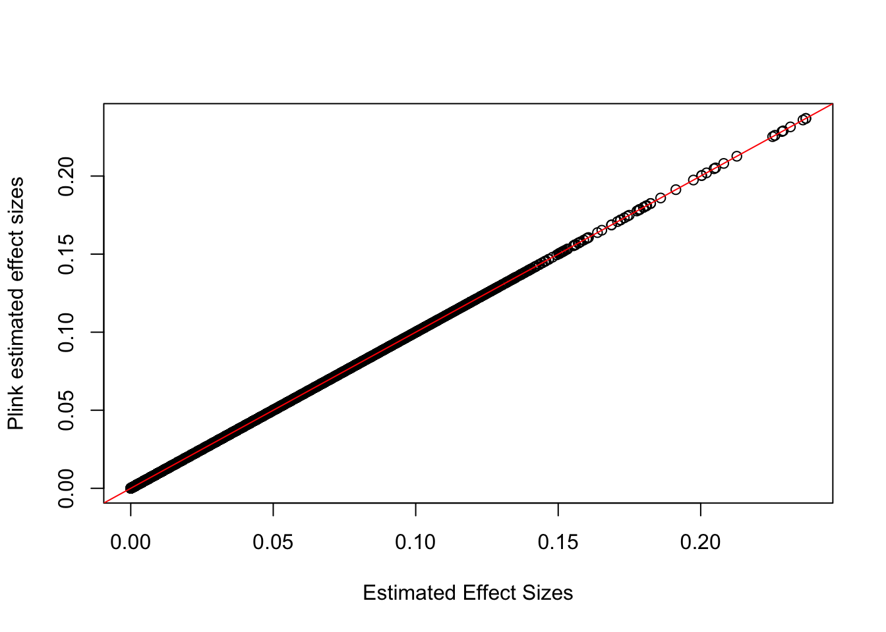
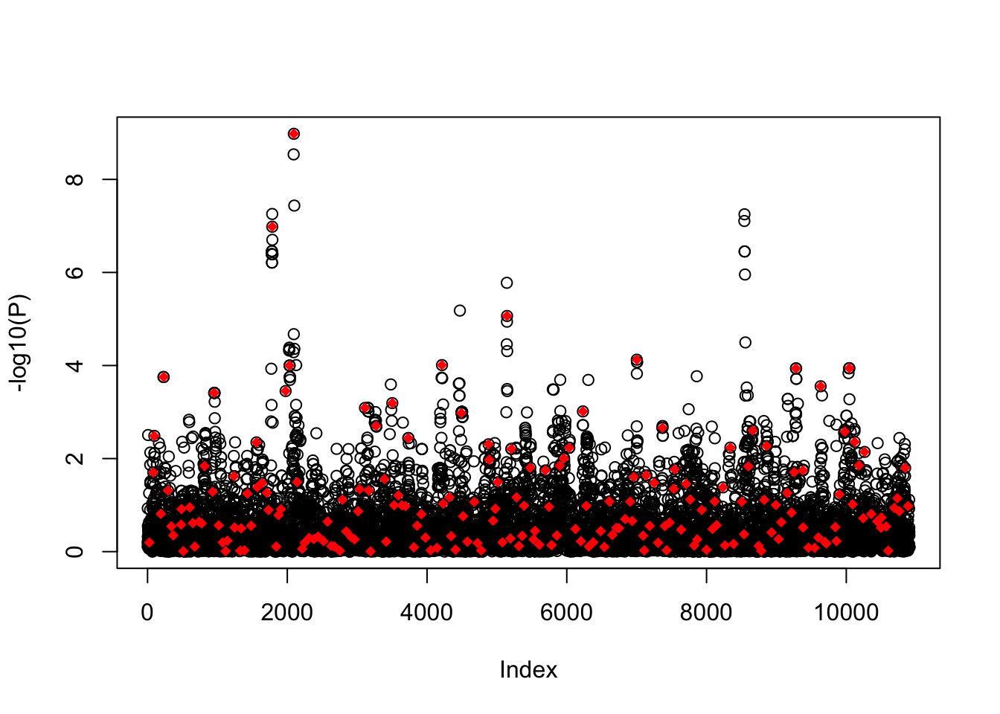
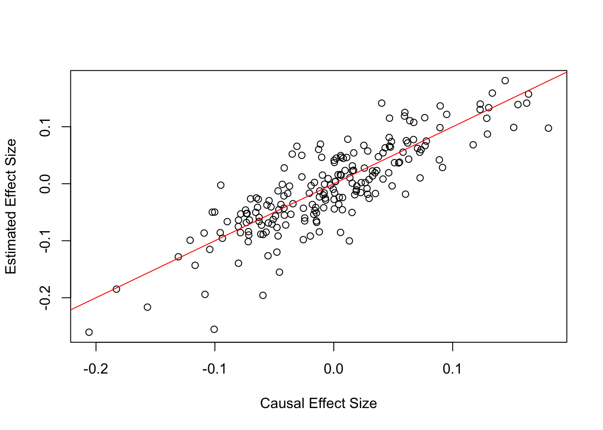
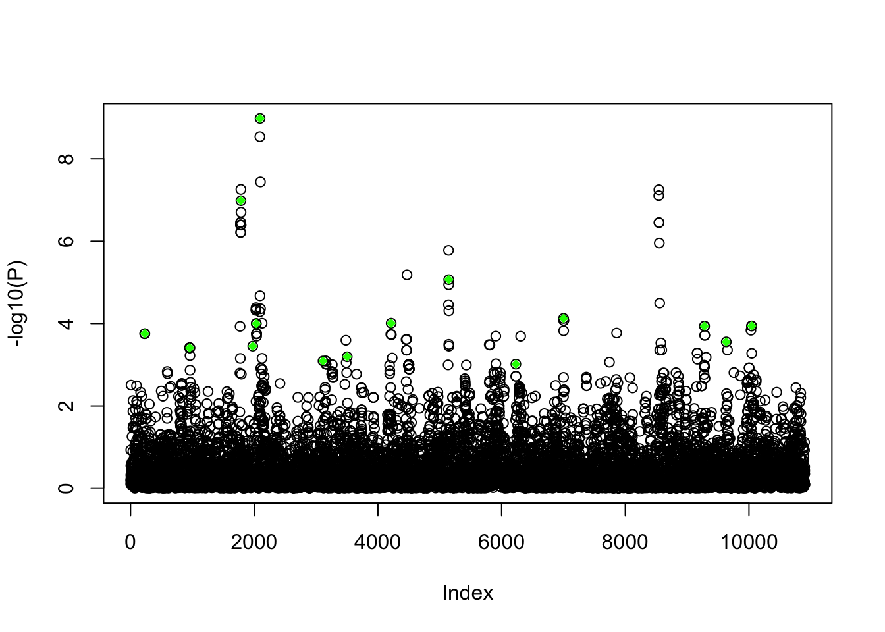
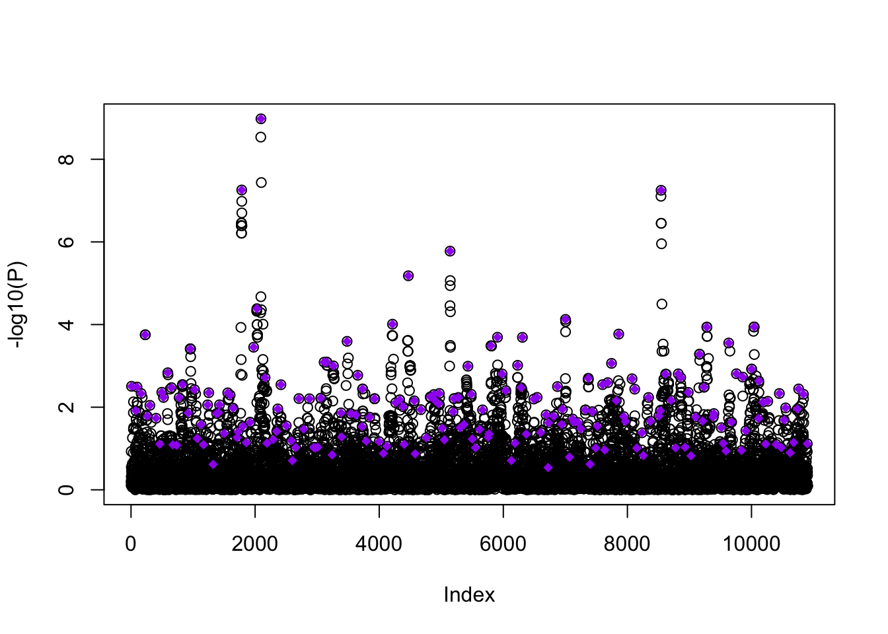

Last updated: 2022-04-26
Checks: 6 1
Knit directory: polygenic_adaptation_stratification/analysis/
This reproducible R Markdown analysis was created with workflowr (version 1.6.2). The Checks tab describes the reproducibility checks that were applied when the results were created. The Past versions tab lists the development history.
The R Markdown is untracked by Git. To know which version of the R Markdown file created these results, you’ll want to first commit it to the Git repo. If you’re still working on the analysis, you can ignore this warning. When you’re finished, you can run wflow_publish to commit the R Markdown file and build the HTML.
Great job! The global environment was empty. Objects defined in the global environment can affect the analysis in your R Markdown file in unknown ways. For reproduciblity it’s best to always run the code in an empty environment.
The command set.seed(20201015) was run prior to running the code in the R Markdown file. Setting a seed ensures that any results that rely on randomness, e.g. subsampling or permutations, are reproducible.
Great job! Recording the operating system, R version, and package versions is critical for reproducibility.
Nice! There were no cached chunks for this analysis, so you can be confident that you successfully produced the results during this run.
Great job! Using relative paths to the files within your workflowr project makes it easier to run your code on other machines.
Great! You are using Git for version control. Tracking code development and connecting the code version to the results is critical for reproducibility.
The results in this page were generated with repository version 931f818. See the Past versions tab to see a history of the changes made to the R Markdown and HTML files.
Note that you need to be careful to ensure that all relevant files for the analysis have been committed to Git prior to generating the results (you can use wflow_publish or wflow_git_commit). workflowr only checks the R Markdown file, but you know if there are other scripts or data files that it depends on. Below is the status of the Git repository when the results were generated:
Ignored files:
Ignored: .DS_Store
Ignored: .Rhistory
Ignored: .Rproj.user/
Ignored: .snakemake/
Ignored: analysis/Calculate_TGWAS_cache/
Ignored: analysis/figure/
Ignored: code/.DS_Store
Ignored: code/1kg/.DS_Store
Ignored: code/Calculate_Tm/.DS_Store
Ignored: code/Debug/.DS_Store
Ignored: code/PGA_test/.DS_Store
Ignored: code/PRS/.DS_Store
Ignored: code/Simulate_Genotypes/.DS_Store
Ignored: code/Simulate_Phenotypes/.DS_Store
Ignored: code/Snakefiles/.DS_Store
Ignored: code/Snakefiles/4PopSplit/.DS_Store
Ignored: data/.DS_Store
Ignored: data/1kg/
Ignored: data/cgd_example/
Ignored: data/projection_example/
Ignored: data/proof/
Ignored: output/.DS_Store
Ignored: output/Calculate_TGWAS/
Ignored: output/Calculate_Tm/4PopSplit/A10/
Ignored: output/Calculate_Tm/4PopSplit/A2/
Ignored: output/Calculate_Tm/4PopSplit/B1/
Ignored: output/Calculate_Tm/4PopSplit/E2/
Ignored: output/Calculate_Tm/4PopSplit/E20/
Ignored: output/Calculate_Tm/4PopSplit/E3/
Ignored: output/Calculate_Tm/4PopSplit/E4/
Ignored: output/Calculate_Tm/4PopSplit/E5/
Ignored: output/Calculate_Tm/4PopSplit/E6/
Ignored: output/Calculate_Tm/4PopSplit/E7/
Ignored: output/Calculate_Tm/4PopSplit/E8/
Ignored: output/Calculate_Tm/4PopSplit/E9/
Ignored: output/Calculate_Tm/SimpleGrid/A1/
Ignored: output/Calculate_Tm/SimpleGrid/B1/
Ignored: output/Calculate_Tm/SimpleGrid/E1/
Ignored: output/Calculate_Tm/SimpleGrid/E2/
Ignored: output/Calculate_Tm/SimpleGrid/E3/
Ignored: output/Calculate_Tm/SimpleGrid/E4/
Ignored: output/Calculate_Tm/SimpleGrid/E5/
Ignored: output/PGA_test/
Ignored: output/PRS/
Ignored: output/Run_GWAS/
Ignored: output/Simulate_Genotypes/.DS_Store
Ignored: output/Simulate_Genotypes/4PopSplit/
Ignored: output/Simulate_Genotypes/SimpleGrid/A1/
Ignored: output/Simulate_Genotypes/SimpleGrid/E1/
Ignored: output/Simulate_Genotypes/SimpleGrid/E2/
Ignored: output/Simulate_Genotypes/SimpleGrid/E3/
Ignored: output/Simulate_Genotypes/SimpleGrid/E4/
Ignored: output/Simulate_Genotypes/SimpleGrid/E5/
Ignored: output/Simulate_Genotypes/SimpleGrid/E6/
Ignored: output/Simulate_Genotypes/SimpleGrid/E7/
Ignored: output/Simulate_Genotypes/SimpleGrid/E8/
Ignored: output/Simulate_Genotypes/SimpleGrid/S1/
Ignored: output/Simulate_Phenotypes/
Untracked files:
Untracked: _workflowr.yml~
Untracked: analysis/Calculate_TGWAS.Rmd
Untracked: analysis/Run_GWAS.Rmd
Untracked: code/Snakefiles/SimpleGrid/North-South-Meta/
Untracked: plink2.acount
Untracked: plink2.fst.summary
Untracked: plink2.log
Untracked: temp.R
Unstaged changes:
Modified: _workflowr.yml
Modified: analysis/Midparent.Rmd
Modified: analysis/Projection_plink2.Rmd
Modified: analysis/Simulate_Genotypes.Rmd
Modified: analysis/Simulate_Phenotypes.Rmd
Modified: analysis/Simulation_Methods_Reproducible.Rmd
Modified: analysis/index.Rmd
Modified: code/Calculate_Tm/4PopSplit_make_tvec.R
Modified: code/Calculate_Tm/calc_Tm.R
Modified: code/Calculate_Tm/format_ID_covars.R
Modified: code/PRS/clump.R
Modified: code/Simulate_Genotypes/generate_genotypes_4PopSplit.py
Modified: code/Simulate_Genotypes/split_gwas-test_4PopSplit.R
Modified: code/Simulate_Phenotypes/draw_effect_sizes_4PopSplit.R
Modified: code/Simulate_Phenotypes/simulate_phenotypes_4PopSplit.R
Deleted: code/Snakefiles/4PopSplit/Signal/snakefile
Modified: snakefile
Note that any generated files, e.g. HTML, png, CSS, etc., are not included in this status report because it is ok for generated content to have uncommitted changes.
There are no past versions. Publish this analysis with wflow_publish() to start tracking its development.
Here we will go through the steps to run the 3 different GWASs shown in the main text and outline our procedure to select SNPs to include in the polygenic score estimation done in the selection test.
We want to run 3 separate GWASs:
This will allow us to compare our correction method, \(\vec{T}^{GWAS}\), to both no using any correction method and to the best case scenario of including the confounder (in this case population ID).
First we will format a covariate file that includes \(\vec{T}^{GWAS}\) and population ID.
# Snakemake rule
rule format_covars:
input:
pops="output/Simulate_Genotypes/4PopSplit/{rep}/genos.pop",
fam="output/Simulate_Genotypes/4PopSplit/{rep}/{config}/genos-gwas_common.psam",
Tm="output/Calculate_Tm/4PopSplit/{rep}/{config}/Tm.txt"
output:
"output/Calculate_Tm/4PopSplit/{rep}/{config}/Tm-ID_covars.txt",
shell:
"Rscript code/Calculate_Tm/format_ID_covars.R {input.pops} {input.Tm} {input.fam} {output}"# Read in GWAS panel information
pops <- fread("../output/Simulate_Genotypes/4PopSplit/B1/genos.pop", header = T)
fam <- fread("../output/Simulate_Genotypes/4PopSplit/B1/C1/genos-gwas_common.psam")
# Read in TGWAS
Tm <- fread("../output/Calculate_Tm/4PopSplit/B1/C1/Tm.txt")
# Format covariate file
tmp <- dplyr::inner_join(pops, fam, by = c("IID"= "IID")) %>% select("IID", "POP")
df <- as.data.frame(cbind(tmp$IID, tmp$IID, Tm, tmp$POP))
colnames(df) <- c("FID","IID", "Tm", "PopID")
pops <- unique(df$PopID)
df <- df %>% mutate(PopID = case_when((PopID == pops[1]) ~ 1, (PopID == pops[2]) ~ 0))
kable(head(df))| FID | IID | Tm | PopID |
|---|---|---|---|
| tsk_0 | tsk_0 | 0.2734113 | 1 |
| tsk_1 | tsk_1 | 0.2863926 | 1 |
| tsk_2 | tsk_2 | 0.2909277 | 1 |
| tsk_3 | tsk_3 | 0.2087834 | 1 |
| tsk_4 | tsk_4 | 0.1100468 | 1 |
| tsk_5 | tsk_5 | 0.3162004 | 1 |
We first want to run a GWAS with no correction using the model below where \(\vec{Y}\) are phenotypes and \(\vec{g}_{\ell}\) are the genotype counts of the alternate allele.
\[\vec{Y} \sim \vec{g}_{\ell}\]
Here we demonstrate how this GWAS can be done using R and show that it is equivalent to using --glm function in plink2. We do not that plink2 returns the effect size estimate of the minor allele rather than the alternate allele. We account for this fact by flipping the sign of the effect size when ascertaining SNPs in the next step.
# Read in GWAS Matrix
pvar <- NewPvar("../output/Simulate_Genotypes/4PopSplit/B1/C1/genos-gwas_common.pvar")
d1 <- NewPgen("../output/Simulate_Genotypes/4PopSplit/B1/C1/genos-gwas_common.pgen")
G <- ReadList(d1,seq(1,10905), meanimpute=F)
# Read in phenotypes
phenos <- fread("../output/Simulate_Phenotypes/4PopSplit/B1/C1/h2-0.3/p-0.50/env_0.0/genos-gwas_common.phenos.txt")
# Run GWAS
betas <- rep(0, ncol(G))
for (i in 1:ncol(G)) {
mod <- lm(phenos$pheno_strat ~ G[,i])
betas[i] <- coef(mod)[2]
}
# Read in betas from plink
plinkB <- fread("../output/Run_GWAS/4PopSplit/B1/C1/h2-0.3/p-0.50/env_0.0/genos-gwas_common.pheno_strat.glm.linear")
# Copmare to estimated effect sizes from plink
plot(abs(betas), abs(plinkB$BETA), xlab = "Estimated Effect Sizes", ylab = "Plink estimated effect sizes")
abline(a = 0, b = 1, col = "red")
We then repeat the GWAS using our covariate \(\vec{T}^{GWAS}\).
\[\vec{Y} \sim \vec{g}_{\ell} + \vec{T}^{GWAS}\]
# Read in covariate file
covars <- fread("../output/Calculate_Tm/4PopSplit/B1/C1/Tm-ID_covars.txt")
# Run GWAS
betas <- rep(0, ncol(G))
for (i in 1:ncol(G)) {
mod <- lm(phenos$pheno_strat ~ G[,i] + covars$Tm)
betas[i] <- coef(mod)[2]
}
# Read in betas from plink
plinkB <- fread("../output/Run_GWAS/4PopSplit/B1/C1/h2-0.3/p-0.50/env_0.0/genos-gwas_common-Tm.pheno_strat.glm.linear")
# Copmare to estimated effect sizes from plink
plot(abs(betas), abs(plinkB$BETA), xlab = "Estimated Effect Sizes", ylab = "Plink estimated effect sizes")
abline(a = 0, b = 1, col = "red")
Finally, we repeat the GWAS a third time using population ID as a covariate.
\[\vec{Y} \sim \vec{g}_{\ell} + \vec{\text{ID}}\]
# Run GWAS
betas <- rep(0, ncol(G))
for (i in 1:ncol(G)) {
mod <- lm(phenos$pheno_strat ~ G[,i] + covars$PopID)
betas[i] <- coef(mod)[2]
}
# Read in betas from plink
plinkB <- fread("../output/Run_GWAS/4PopSplit/B1/C1/h2-0.3/p-0.50/env_0.0/genos-gwas_common-ID.pheno_strat.glm.linear")
# Copmare to estimated effect sizes from plink
plot(abs(betas), abs(plinkB$BETA), xlab = "Estimated Effect Sizes", ylab = "Plink estimated effect sizes")
abline(a = 0, b = 1, col = "red")Here are the snakemake rules to run these GWASs using plink2.
# Snakemake rule
rule gwas_no_correction:
input:
genos="output/Simulate_Genotypes/4PopSplit/{rep}/{config}/genos-gwas_common.psam",
pheno="output/Simulate_Phenotypes/4PopSplit/{rep}/{config}/{h2}/{ts}/{env}/genos-gwas_common.phenos.txt"
output:
"output/Run_GWAS/4PopSplit/{rep}/{config}/{h2}/{ts}/{env}/genos-gwas_common.pheno_strat.glm.linear"
shell:
"""
~/plink2 \
--pfile output/Simulate_Genotypes/4PopSplit/{wildcards.rep}/{wildcards.config}/genos-gwas_common \
--glm allow-no-covars\
--pheno {input.pheno} \
--pheno-name pheno_strat \
--out output/Run_GWAS/4PopSplit/{wildcards.rep}/{wildcards.config}/{wildcards.h2}/{wildcards.ts}/{wildcards.env}/genos-gwas_common
"""
rule gwas_Tm:
input:
genos="output/Simulate_Genotypes/4PopSplit/{rep}/{config}/genos-gwas_common.psam",
pheno="output/Simulate_Phenotypes/4PopSplit/{rep}/{config}/{h2}/{ts}/{env}/genos-gwas_common.phenos.txt",
Tm="output/Calculate_Tm/4PopSplit/{rep}/{config}/Tm-ID_covars.txt"
output:
"output/Run_GWAS/4PopSplit/{rep}/{config}/{h2}/{ts}/{env}/genos-gwas_common-Tm.pheno_strat.glm.linear"
shell:
"""
plink2 \
--pfile output/Simulate_Genotypes/4PopSplit/{wildcards.rep}/{wildcards.config}/genos-gwas_common \
--glm hide-covar \
--covar {input.Tm} \
--covar-col-nums 3 \
--pheno {input.pheno} \
--pheno-name pheno_strat \
--out output/Run_GWAS/4PopSplit/{wildcards.rep}/{wildcards.config}/{wildcards.h2}/{wildcards.ts}/{wildcards.env}/genos-gwas_common-Tm
"""
rule gwas_PopID:
input:
genos="output/Simulate_Genotypes/4PopSplit/{rep}/{config}/genos-gwas_common.psam",
pheno="output/Simulate_Phenotypes/4PopSplit/{rep}/{config}/{h2}/{ts}/{env}/genos-gwas_common.phenos.txt",
Tm="output/Calculate_Tm/4PopSplit/{rep}/{config}/Tm-ID_covars.txt"
output:
"output/Run_GWAS/4PopSplit/{rep}/{config}/{h2}/{ts}/{env}/genos-gwas_common-ID.pheno_strat.glm.linear"
shell:
"""
plink2 \
--pfile output/Simulate_Genotypes/4PopSplit/{wildcards.rep}/{wildcards.config}/genos-gwas_common \
--glm hide-covar \
--covar {input.Tm} \
--covar-col-nums 4 \
--pheno {input.pheno} \
--pheno-name pheno_strat \
--out output/Run_GWAS/4PopSplit/{wildcards.rep}/{wildcards.config}/{wildcards.h2}/{wildcards.ts}/{wildcards.env}/genos-gwas_common-ID
"""Next we want to ascertain SNPs to include in the polygenic scores we compute in the selection test. We ascertain 3 sets of SNPs that can be used to build the PGSs. Recall that we have simulated 200 separate chromosomes and will always choose one SNP per chromosome for a maxi um of 200 SNPs. In practice we set the p-value threshold to 1 so we are always ascertaining 200 variants to include.
First we select the causal variants
# Read in causal effects
causal <- fread("../output/Simulate_Phenotypes/4PopSplit/B1/C1/h2-0.3/p-0.50/env_0.0/genos-gwas_common.effects.txt")
colnames(causal)=c("rsid","allele","esize")
causal=causal%>%
tidyr::separate(rsid,into=c("CHROM","POS","ref","alt"),sep="_",remove=F)
causal$POS=as.numeric(causal$POS)
causal$CHROM=as.numeric(causal$CHROM)
# Read in the GWAS estimates
gwas <- fread("../output/Run_GWAS/4PopSplit/B1/C1/h2-0.3/p-0.50/env_0.0/genos-gwas_common.pheno_strat.glm.linear")
colnames(gwas)[1]="CHROM"
gwas$Index <- seq(1, nrow(gwas))
# Flip effects sizes to get effect size of the ALT allele
flip_effect = function(gwas_df,beta_colname){
gwas_df = gwas_df[A1=="A", beta_colname := -BETA]
gwas_df = gwas_df[A1=="T", beta_colname := BETA]
gwas_df$A1="T"
gwas_df = gwas_df[,.(CHROM,POS,ID,A1,beta_colname,P, Index)]
colnames(gwas_df)[5] = beta_colname
return(gwas_df)
}
gwas = flip_effect(gwas,beta_colname = "BETA1")
# Select effect sizes for causal variants
gwas.causal= gwas[ID%in%causal$rsid]
gwas.causal=gwas.causal[,c("ID","A1","BETA1", "P", "Index")]
colnames(gwas.causal) <- c("ID", "A1", "BETA_Strat", "P", "Index")
# Plot GWAS results, highlighting ascertained SNPS
plot(gwas$Index, -log10(gwas$P), xlab = "Index", ylab = "-log10(P)")
points(gwas.causal$Index, -log10(gwas.causal$P), col = "red", pch = 18)
We can also compare estimated effect sizes to causal effect sizes
plot(causal$esize,gwas.causal$BETA_Strat, xlab = "Causal Effect Size", ylab = "Estimated Effect Size")
abline(0, 1, col = "red")
Next, we can filter these causal sites to only ascertain those under a given p-value (ex. 1e-3).
# Function to select variants under a threshold
fcausal_p = function(df,pvalue=pval_threshold){
df=df%>%
filter(P < pvalue)
return(df)
}
gwas.thresh = fcausal_p(gwas.causal,1e-3)
gwas.thresh=gwas.thresh[,c("ID","A1","BETA_Strat", "P", "Index")]
# Plot GWAS results, highlighting ascertained SNPS
plot(gwas$Index, -log10(gwas$P), xlab = "Index", ylab = "-log10(P)")
points(gwas.thresh$Index, -log10(gwas.thresh$P), col = "green", pch = 18)
Finally, we will ascertain a third set of SNPs where we select the SNP with the lowest p-value, below a threshold, per chromosome.
# Function to select lowest p-value per chromosome
fclump <- function(df, pt, CHR) {
# Select only SNPS under threshold
df <- gwas1 %>% filter(P < pt) %>% filter(CHROM == CHR)
# Select lowest p-value
min_p <- df %>% slice_min(P, with_ties = F)
return(min_p)
}
# Extract chromosome info
tmp = gwas %>% mutate(ID2 = ID) %>% separate(ID2, c("chr", "pos", "a1", "a2"), "_")
gwas1= tmp %>% mutate(CHROM = chr) %>% select("CHROM", "POS", "ID", "A1", "BETA1", "P", "Index")
# Set pvalue threshold
pval_threshold = 1
# Pick the minimum p-value SNP on chrom 1
nchrms = unique(gwas1$CHROM)
gwas.red = fclump(gwas1, pval_threshold, 1)
# Repeat selection for each chromosome
for (i in 2:length(nchrms)) {
new = fclump(gwas1, pval_threshold, nchrms[i])
new = new[order(new), ]
gwas.red = rbind(gwas.red, new)
}
# Plot GWAS results, highlighting ascertained SNPS
plot(gwas$Index, -log10(gwas$P), xlab = "Index", ylab = "-log10(P)")
points(gwas.red$Index, -log10(gwas.red$P), col = "purple", pch = 18)
Here are the snakemake rules to run all three ascertainment steps.
rule pick_SNPS:
input:
causal_effect="output/Simulate_Phenotypes/4PopSplit/{rep}/{config}/{h2}/{ts}/{env}/genos-gwas_common.effects.txt",
gwas_strat="output/Run_GWAS/4PopSplit/{rep}/{config}/{h2}/{ts}/{env}/genos-gwas_common.pheno_strat.glm.linear"
output:
"output/PRS/4PopSplit/{rep}/{config}/{h2}/{ts}/{env}/genos-gwas_common.c.betas",
"output/PRS/4PopSplit/{rep}/{config}/{h2}/{ts}/{env}/genos-gwas_common.c.p.betas",
"output/PRS/4PopSplit/{rep}/{config}/{h2}/{ts}/{env}/genos-gwas_common.nc.betas"
params:
pt = PVALUE_THRESHOLD
shell:
"""
Rscript code/PRS/clump.R {input.causal_effect} output/Run_GWAS/4PopSplit/{wildcards.rep}/{wildcards.config}/{wildcards.h2}/{wildcards.ts}/{wildcards.env}/genos-gwas_common {params.pt} output/PRS/4PopSplit/{wildcards.rep}/{wildcards.config}/{wildcards.h2}/{wildcards.ts}/{wildcards.env}/genos-gwas_common
"""
rule pick_SNPS_Tm:
input:
causal_effect="output/Simulate_Phenotypes/4PopSplit/{rep}/{config}/{h2}/{ts}/{env}/genos-gwas_common.effects.txt",
gwas_strat="output/Run_GWAS/4PopSplit/{rep}/{config}/{h2}/{ts}/{env}/genos-gwas_common-Tm.pheno_strat.glm.linear"
output:
"output/PRS/4PopSplit/{rep}/{config}/{h2}/{ts}/{env}/genos-gwas_common-Tm.c.betas",
"output/PRS/4PopSplit/{rep}/{config}/{h2}/{ts}/{env}/genos-gwas_common-Tm.c.p.betas",
"output/PRS/4PopSplit/{rep}/{config}/{h2}/{ts}/{env}/genos-gwas_common-Tm.nc.betas"
params:
pt = PVALUE_THRESHOLD
shell:
"""
Rscript code/PRS/clump.R {input.causal_effect} output/Run_GWAS/4PopSplit/{wildcards.rep}/{wildcards.config}/{wildcards.h2}/{wildcards.ts}/{wildcards.env}/genos-gwas_common-Tm {params.pt} output/PRS/4PopSplit/{wildcards.rep}/{wildcards.config}/{wildcards.h2}/{wildcards.ts}/{wildcards.env}/genos-gwas_common-Tm
"""
rule pick_SNPS_ID:
input:
causal_effect="output/Simulate_Phenotypes/4PopSplit/{rep}/{config}/{h2}/{ts}/{env}/genos-gwas_common.effects.txt",
gwas_strat="output/Run_GWAS/4PopSplit/{rep}/{config}/{h2}/{ts}/{env}/genos-gwas_common-ID.pheno_strat.glm.linear"
output:
"output/PRS/4PopSplit/{rep}/{config}/{h2}/{ts}/{env}/genos-gwas_common-ID.c.betas",
"output/PRS/4PopSplit/{rep}/{config}/{h2}/{ts}/{env}/genos-gwas_common-ID.c.p.betas",
"output/PRS/4PopSplit/{rep}/{config}/{h2}/{ts}/{env}/genos-gwas_common-ID.nc.betas"
params:
pt = PVALUE_THRESHOLD
shell:
"""
Rscript code/PRS/clump.R {input.causal_effect} output/Run_GWAS/4PopSplit/{wildcards.rep}/{wildcards.config}/{wildcards.h2}/{wildcards.ts}/{wildcards.env}/genos-gwas_common-ID {params.pt} output/PRS/4PopSplit/{wildcards.rep}/{wildcards.config}/{wildcards.h2}/{wildcards.ts}/{wildcards.env}/genos-gwas_common-ID
"""
sessionInfo()R version 3.6.2 (2019-12-12)
Platform: x86_64-apple-darwin15.6.0 (64-bit)
Running under: macOS High Sierra 10.13.6
Matrix products: default
BLAS: /Library/Frameworks/R.framework/Versions/3.6/Resources/lib/libRblas.0.dylib
LAPACK: /Library/Frameworks/R.framework/Versions/3.6/Resources/lib/libRlapack.dylib
locale:
[1] en_US.UTF-8/en_US.UTF-8/en_US.UTF-8/C/en_US.UTF-8/en_US.UTF-8
attached base packages:
[1] stats graphics grDevices utils datasets methods base
other attached packages:
[1] tidyr_1.1.3 pgenlibr_0.3.1 data.table_1.14.2 dplyr_1.0.7
[5] knitr_1.37
loaded via a namespace (and not attached):
[1] Rcpp_1.0.7 highr_0.9 pillar_1.6.4 compiler_3.6.2
[5] bslib_0.3.0 later_1.3.0 jquerylib_0.1.4 git2r_0.28.0
[9] workflowr_1.6.2 tools_3.6.2 digest_0.6.29 lattice_0.20-44
[13] jsonlite_1.7.2 evaluate_0.14 lifecycle_1.0.1 tibble_3.1.6
[17] png_0.1-7 pkgconfig_2.0.3 rlang_0.4.12 Matrix_1.3-4
[21] DBI_1.1.1 yaml_2.2.1 xfun_0.29 fastmap_1.1.0
[25] stringr_1.4.0 generics_0.1.0 fs_1.5.2 vctrs_0.3.8
[29] sass_0.4.0 grid_3.6.2 rprojroot_2.0.2 tidyselect_1.1.1
[33] reticulate_1.20 glue_1.6.0 R6_2.5.1 fansi_0.5.0
[37] rmarkdown_2.10 purrr_0.3.4 magrittr_2.0.1 promises_1.2.0.1
[41] ellipsis_0.3.2 htmltools_0.5.2 assertthat_0.2.1 httpuv_1.6.2
[45] utf8_1.2.2 stringi_1.7.6 crayon_1.4.2